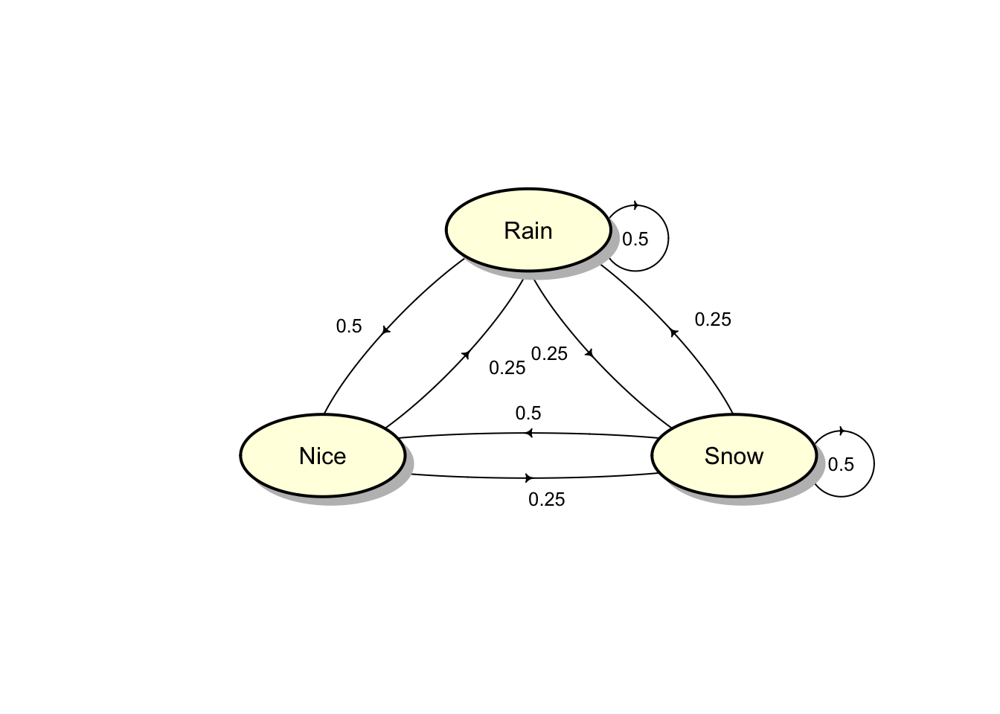

Chapter 4 Discrete-time Markov chains
Recall the simple random walk model of the price of the stock. Suppose the stock price for the first four days are \[(X_0, X_1, X_2, X_3) = (100, 99, 98, 99).\] Based on this past information, what can we say about the price at day 4, \(X_4\)? Although, we completely know the whole past price history, the only information relevant for predicting their future price is the price on the previous day, i.e. \(X_3\). This means that \[\Pr(X_{4} = j | X_0 = 100, X_{1} = 99, X_2 = 98 , X_3 = 99) = \Pr(X_{4} = j | X_3 = 99).\] Given the current price \(X_3\), the price \(X_4\) at day 4 is independent of the history prices \(X_0, X_1, X_2\). The sequence of stock prices \(X_0, X_1, \ldots, X_n\) is an example of a Markov chain.
A Markov process is a special type of stochastic processes with the property that the future evolution of the process depends only on its current state and not on its past history. That is given the value of \(X_t\), the values of \(X_s\) for \(s > t\) do not depend on the values of \(X_u\) for \(u < t\). This property is called the Markov property.
A discrete-time Markov chain is a discrete-time stochastic process that satisfies the Markov property: \[\Pr(X_{n+1} = j | X_n = i, X_{n-1} = i_{n-1}, \ldots, X_0 = i_{0}) = \Pr(X_{n+1} = j | X_n = i),\] for all time points \(n\) and all states \(i_0, i_1, \ldots, i_{n-1},i,j\). It is convenient to assume that the state space of the Markov chain is a subset of non-negative integers, i.e. \(S \subseteq \{0, 1, \ldots \}\).
Example 4.1 A process with independent increments has the Markov property.
Solution:
Recall the following definitions. An increment of a process is the amount by which its value changes over a period of time, for e.g. \(X_{t +u} - X_t\) where \(u > 0\).
A process \(X_t\) is said to have independent increments if for all \(t\) and every \(u > 0\), the increment \(X_{t +u} - X_t\) is independent of all the past of the process \(\{X_s : 0 \le s \le t \}\)).
In order to show that a process with independent increments has the Markov property, we proceed as follows: for all times \(s_1 < s_2 < \ldots < s_n < s < t\) \[\begin{aligned} \Pr(X_t \in A | X_{s_1} = x_1, X_{s_2} = x_2, \ldots, X_{s_n} = x_n ,X_{s} = x) &= \Pr(X_t - X_s + x \in A | X_{s_1} = x_1, X_{s_2} = x_2, \ldots, X_{s_n} = x_n, X_{s} = x) \\ &= \Pr(X_t - X_s + x \in A | X_{s} = x) \text{(by independence of the past)} \\ &= \Pr(X_t \in A | X_{s} = x).\end{aligned}\]
Note The random walk process has the Markov property.
4.1 One-step transition probabilities
The conditional probability that \(X_{n+1}\) is in state \(j\) given that \(X_n\) is in state \(i\) is called one-step transition probability and is denoted by \[\Pr(X_{n+1} = j | X_n = i) = p_{ij}^{n,n+1}.\] Note that the transition probabilities depend not only on the current and future states, but also on the time of transition \(n\).
If the transition probabilities \(p_{ij}^{n,n+1}\) in a Markov chain do not depend on time \(n\), the Markov chain is said to be time-homogeneous or stationary or simply homogeneous. Then \[p_{ij}^{n,n+1} = \Pr(X_{n+1} = j | X_n = i) = \Pr(X_{1} = j | X_0 = i) = p_{ij}.\] Otherwise, it is said to be nonstationary or nonhomogeneous.
Unless stated otherwise, it shall be assumed that the Markov chain is stationary. The matrix \(P\) whose elements are \(p_{ij}\) is called the transition probability matrix of the process. \[P = \begin{bmatrix} p_{11} & p_{12} & p_{13} & \dots \\ p_{21} & p_{22} & p_{23} & \dots \\ p_{31} & p_{32} & p_{33} & \dots \\ \vdots & \vdots & \vdots & \vdots \\ %p_{d1} & p_{d2} & p_{d3} & \dots & p_{dn} \end{bmatrix}.\] Note that the elements of the matrix \(P\) satisfies the following properties: \[\ 0 \le p_{ij} \le 1, \quad \text{ and } \quad \sum_{j \in S}p_{ij} = 1,\] for all \(i,j \in S.\) A matrix that satisfies these properties is called a stochastic matrix.
Example 4.2 No claims discount (NCD) policy: Let \(X_n\) be the discount status of a policyholder at time \(n\). There are three levels of discount, i.e. \(S = \{0,1,2\}\) corresponding to three discount levels of 0, 20% and 40%. The following rules are assumed:
For a claim-free year, the policyholder moves up a level or remains in state 2 (the maximum discount state).
If there is at least one claim, the policyholder moves down one level or remains in state 0.
Suppose also that the probability of a claim-free year is \(p\) and is independent of \(n\). The transition probability matrix is given by \[P = \begin{bmatrix} 1- p & p & 0 \\ 1-p & 0 & p \\ 0 & 1-p & p \\ %\vdots & \vdots & \vdots & \vdots \\ %p_{d1} & p_{d2} & p_{d3} & \dots & p_{dn} \end{bmatrix}.\] The transition diagram is illustrated in the following figure.
The following questions are of interest.
What is the probability \[\Pr(X_0 = i_0, X_1 = i_1, X_2 = i_2, \ldots, X_n = i_n)?\]
What is the probability \[\Pr(X_{n+1} = i_{n+1}, X_{n+2} = i_{n+2}, \ldots, X_{n+m} = i_{n+m}| X_n = i_n, X_{n-1} = i_{n-1}, \ldots, X_0 = i_{0})?\]
What is the probability of transferring from state \(i\) to state \(j\) in \(n\) steps \[\Pr(X_{m+n} = j | X_m = i )?\]
What is the long-term behavior of the Makov chain, i.e. \(\lim_{n \rightarrow \infty} \Pr(X_n = j), j = 0,1,2\) given that \(\Pr(X_0 = 0)\).
Later we will apply matrix algebra to compute these types of probabilities and long-term probabilities.
Example 4.3 In a health insurance system, at the end of each day an insurance company classifies policyholders as Healthy, Sick or Dead, i.e. \(S = \{H, S, D\}\). The following transition matrix \(P\) for a healthy-sick-dead model is given by \[P = \begin{bmatrix} p_{11} & p_{12} & p_{13} \\ p_{21} & p_{22} & p_{23} \\ 0 & 0 & 1 \\ %p_{d1} & p_{d2} & p_{d3} & \dots & p_{dn} \end{bmatrix}.\]
The transition diagram is shown below.
It turns out that the probabilistic description of the Markov chain is completely determined by its transition probability matrix and its initial probability distribution \(X_0\) at time 0.
Example 4.4 By using the definition of conditional probabilities, show that \[\Pr(X_0 = i_0, X_1 = i_1, X_2 = i_2, \ldots, X_n = i_n) = \mu_{i_0}\, p_{i_0i_1} \cdots \, p_{i_{n-2} i_{n-1}}\, p_{i_{n-1} i_n},\] where \(\boldsymbol{\mu} = \boldsymbol{\mu}^{(0)}\) is the distribution of initial random variable \(X_0\), i.e. \(\mu_i = \Pr(X_0 = i)\) (the probability mass function of \(X_0\)).
Solution: \[\begin{aligned} &\Pr(X_0 = i_0, X_1 = i_1, \ldots, X_n = i_n) \\ &= \Pr(X_0 = i_0, X_1 = i_1, \ldots, X_{n-1} = i_{n-1}) \cdot \Pr(X_n = i_n | X_0 = i_0, X_1 = i_1, \ldots, X_{n-1} = i_{n-1})\\ &= \Pr(X_0 = i_0, X_1 = i_1, \ldots, X_{n-1} = i_{n-1}) \cdot \Pr(X_n = i_n | X_{n-1} = i_{n-1})\\ &= \Pr(X_0 = i_0, X_1 = i_1, \ldots, X_{n-1} = i_{n-1}) \cdot p_{i_{n-1} i_n} \\ &\quad \vdots \\ &= \mu_{i_0}\, p_{i_0i_1} \cdots \, p_{i_{n-2} i_{n-1}}\, p_{i_{n-1} i_n}. \end{aligned}\]
Example 4.5 Show that \[\begin{aligned} \Pr(X_{n+1} &= i_{n+1}, X_{n+2} = i_{n+2}, \ldots, X_{n+m} = i_{n+m}| X_n = i_n, X_{n-1} = i_{n-1}, \ldots, X_0 = i_{0}) \\ &= \Pr(X_{n+1} = i_{n+1}, X_{n+2} = i_{n+2}, \ldots, X_{n+m} = i_{n+m}| X_n = i_n) \\ &= p_{i_{n} i_{n+1}} \cdots \, p_{i_{n+m-2} i_{n+m-1}}\, p_{i_{n+m-1} i_{n+m}}.\end{aligned}\]
Solution: \[\begin{aligned} &\Pr(X_{n+1} = i_{n+1}, X_{n+2} = i_{n+2}, \ldots, X_{n+m} = i_{n+m}| X_n = i_n, X_{n-1} = i_{n-1}, \ldots, X_0 = i_{0}) \\ &= \Pr(X_{n+1} = i_{n+1}, X_{n+2} = i_{n+2}, \ldots, X_{n+m} = i_{n+m}| X_n = i_n) \\ &= \Pr( X_{n+2} = i_{n+2}, \ldots, X_{n+m} = i_{n+m}| X_{n+1} = i_{n+1}, X_n = i_n) \cdot \Pr(X_{n+1} = i_{n+1} | X_n = i_n ) \\ &= \Pr( X_{n+2} = i_{n+2}, \ldots, X_{n+m} = i_{n+m}| X_{n+1} = i_{n+1}) \cdot p_{i_n i_{n+1}} \\ &\quad \vdots \\ &= \Pr( X_{n+m} = i_{n+m}| X_{n+m-1} = i_{n+m-1}) \cdots \Pr( X_{n+2} = i_{n+2}| X_{n + 1} = i_{n + 1}) \cdot p_{i_n i_{n+1}} \\ &= p_{i_{n+m-1} i_{n+m}} \cdot p_{i_{n+m-2} i_{n+m-1}} \cdots p_{i_n i_{n+1}} .\end{aligned}\]
Note More general probabilities of the possible realisations of the process can be calculated by summing the probabilities of elementary elements of these forms.
Example 4.6 For the NCD system defined on the state space \(S = \{0,1,2\}\) as given in Example 4.2 , suppose that the probability of a claim-free year \(p = 3/4\), and the distribution of the initial discount rate \(\boldsymbol{\mu} = (0.5,0.3,0.2)\). Find the following:
\(\Pr(X_0 = 2, X_1 = 1, X_2 = 0).\)
\(\Pr( X_1 = 1, X_2 = 0 | X_0 = 2).\)
\(\Pr(X_{10} = 2, X_{11} = 1, X_{12} = 0).\)
\(\Pr( X_{11} = 1, X_{12} = 0 | X_{10} = 2).\)
Solution: The corresponding transition matrix is \[P = \begin{bmatrix} 1/4 & 3/4 & 0 \\ 1/4 & 0 & 3/4 \\ 0 & 1/4 & 3/4 \\ %\vdots & \vdots & \vdots & \vdots \\ %p_{d1} & p_{d2} & p_{d3} & \dots & p_{dn} \end{bmatrix}.\]
Denote \(\boldsymbol{\mu} = (\mu_1, \mu_2, \mu_3) = (0.5,0.3,0.2)\) \[\begin{aligned} \Pr(X_0 = 2, X_1 = 1, X_2 = 0) &= \Pr(X_0 = 2, X_1 = 1) \cdot \Pr(X_2 = 0 | X_0 = 2, X_1 = 1) \\ &= \Pr(X_0 = 2, X_1 = 1) \cdot \Pr(X_2 = 0 | X_1 = 1) \quad \text{(by Markov property)}\\ &= \Pr(X_0 = 2) \cdot \Pr(X_1 = 1 | X_0 = 2 ) \cdot \Pr(X_2 = 0 | X_1 = 1) \quad \text{(again by Markov property)}\\ &= \mu_3 p_{32} p_{21} = 0.2\cdot(1/4)\cdot(1/4) = 1/80.\end{aligned}\]
Alternatively, it follows from Example 4.5 that, \[\Pr(X_0 = 2, X_1 = 1, X_2 = 0) = \mu_3 p_{32} p_{21} = 0.2\cdot(1/4)\cdot(1/4) = 1/80.\]
\[\begin{aligned} \Pr( X_1 = 1, X_2 = 0 | X_0 = 2) &= \Pr( X_1 = 1 | X_0 = 2) \cdot \Pr( X_2 = 0 | X_1 = 1, X_0 = 2) \\ &= \Pr( X_1 = 1 | X_0 = 2) \cdot \Pr( X_2 = 0 | X_1 = 1) \quad \text{(by Markov property)}\\ &= p_{32} p_{21} = (1/4)\cdot(1/4) = 1/16.\end{aligned}\]
Following conditional probability, the Markov property, and time-homogeneity (to be discussed later) results in \[\begin{aligned} \Pr(X_{10} = 2, X_{11} = 1, X_{12} = 0) &= \Pr(X_{10} = 2) \cdot \Pr(X_{11} = 1, X_{12} = 0 | X_{10} = 2) \\ &= \Pr(X_{10} = 2) \cdot \Pr(X_{11} = 1 | X_{10} = 2) \cdot \Pr( X_{12} = 0 | X_{10} = 2, X_{11} = 1) \\ &= \Pr(X_{10} = 2) \cdot \Pr(X_{11} = 1 | X_{10} = 2) \cdot \Pr( X_{12} = 0 | X_{11} = 1) \\ &= \Pr(X_{10} = 2) \cdot \Pr(X_{1} = 1 | X_{0} = 2) \cdot \Pr( X_{1} = 0 | X_{0} = 1) \\ &= \Pr(X_{10} = 2) \cdot p_{32} p_{21} = 0.6922\cdot (1/4)\cdot(1/4) = 0.0433. \\\end{aligned}\] Later we will show that \(\Pr(X_{10} = 2) = (\boldsymbol{\mu} P^{10})_3 = 0.6922\) (here \((\boldsymbol{\mu} P^{10})_i\) denotes the \(i\)-th entry of the vector \(\boldsymbol{\mu} P^{10}\).
From conditional probability, the Markov property, and time-homogeneity, it follows that \[\begin{aligned} \Pr( X_{11} = 1, X_{12} = 0 | X_{10} = 2) &= \Pr( X_{11} = 1 | X_{10} = 2) \cdot \Pr( X_{12} = 0 | X_{11} = 1, X_{10} = 2) \\ &= \Pr( X_{11} = 1 | X_{10} = 2) \cdot \Pr( X_{12} = 0 | X_{11} = 1) \quad \text{(by Markov property)}\\ &= \Pr( X_{1} = 1 | X_{0} = 2) \cdot \Pr( X_{1} = 0 | X_{0} = 1) \quad \text{(by time-homogeneity)}\\ &= p_{32} p_{21} = (1/4)\cdot(1/4) = 1/16.\end{aligned}\]
4.2 The Chapman-Kolmogorov equation and \(n\)-step transition probabilities
The \(n\)-step transition probability denoted by \(p^{(n)}_{ij}\) is the probability that the process goes from state \(i\) to state \(j\) in \(n\) transitions, i.e. \[p^{(n)}_{ij} = \Pr(X_{m+n} = j | X_m = i ).\] Note that for homogeneous process, the left hand side of the above equation does not depend on \(m\). Suppose that the transition from state \(i\) at time \(m\) to state \(j\) at time \(m+n\) (i.e. in \(n\) steps), going via state \(k\) in \(l\) steps. One needs to examine all possible paths (from \(i\) to \(k\) and then \(k\) to \(j\)) and hence the \(n\)-step transition probability \(p^{(n)}_{ij}\) can be expressed as the sum of the product of the transition probabilities \(p^{(l)}_{ik} \, p^{(n-l)}_{kj}\). \[\begin{aligned} p^{(n)}_{ij} = \sum_{k \in S}p^{(l)}_{ik} p^{(n-l)}_{kj}, \quad 0 < l < n \end{aligned}\] To derive the Chapman-Kolmogorov equation, we proceed as follows:
\[\begin{aligned} p^{(n)}_{ij} &= \Pr(X_n = j | X_0 = i) \\ &= \sum_{k \in S} \Pr(X_n = j , X_l = k | X_0 = i) \\ &= \sum_{k \in S} \Pr(X_n = j | X_l = k , X_0 = i) \cdot \Pr(X_l = k | X_0 = i) \\ &= \sum_{k \in S} \Pr(X_n = j | X_l = k ) \cdot \Pr(X_l = k | X_0 = i) \\ &= \sum_{k \in S}p^{(n-l)}_{kj} p^{(l)}_{ik} , = \sum_{k \in S}p^{(l)}_{ik} p^{(n-l)}_{kj}, \quad 0 < l < n . \end{aligned}\]
This result is known as the Chapman-Kolmogorov equation. This relation can be expressed in terms of matrix multiplication as \[P^n = P^l P^{n-l}.\] The \(n\)-step transition probabilities \(p^{(n)}_{ij}\) are the \(ij\) elements of \(P^n\).
Example 4.7 For the NCD system given in Example 4.2, suppose that \(p = 3/4\), the probability of a claim-free year and the initial discount level of a policyholder is 1 (with 20% discount).
- Calculate the probability of starting with a discount level of 20% and ending up 3 years later at the same level.
- Calculate the policyholder’s expected level of discount after 3 years.
Solution: The transition matrix is \[P = \begin{bmatrix} 1/4 & 3/4 & 0 \\ 1/4 & 0 & 3/4 \\ 0 & 1/4 & 3/4 \\ %\vdots & \vdots & \vdots & \vdots \\ %p_{d1} & p_{d2} & p_{d3} & \dots & p_{dn} \end{bmatrix},\] and \[P^3 = \begin{bmatrix} 7/64 & 21/64 & 9/16 \\ 7/64 & 3/16 & 45/64 \\ 1/16 & 15/64 & 45/64 \\ %\vdots & \vdots & \vdots & \vdots \\ %p_{d1} & p_{d2} & p_{d3} & \dots & p_{dn} \end{bmatrix}.\]
The probability of starting with a discount level of 20% and ending up 3 years later at the same level is equal to \(p_{11}^{(3)} = 3/16,\) which is the element in the second row and second column of the matrix \(P^3\) (not to be confused with the indices used) .
The policy’s expected level of discount after 3 years is \[\begin{aligned} \mathrm{E}[X_3 | X_0 = 1] &= \sum_{j=0}^{2} j \cdot \Pr(X_3 = j | X_0 = 1) \\ &= 0 \cdot (7/64) + 1 \cdot (3/16) + 2 \cdot (45/64) \\ &= 51/32 = 1.59375.\end{aligned}\]
4.3 Distribution of \(X_n\)
Let \(\boldsymbol{\mu}^{(n)}\) be the vector of probability mass function of \(X_n\), i.e. \[\boldsymbol{\mu}^{(n)} = (\mu_1, \mu_2, \ldots ),\] where \(\mu_i = \Pr(X_n = i)\). It follows that \[\boldsymbol{\mu}^{(n+1)} = \boldsymbol{\mu}^{(n)} P\] and, in general, \[\boldsymbol{\mu}^{(n+m)} = \boldsymbol{\mu}^{(n)} P^m.\]
Example 4.8 Consider the following questions:
Show that \[Pr(X_1 = i) = \sum_{k \in S} \mu_k p_{ki} = ( \boldsymbol{\mu} P)_i,\] which is the \(i\)th element of the vector \(\boldsymbol{\mu} P.\) Here \(\boldsymbol{\mu} = \boldsymbol{\mu}^{0}\) is the distribution of initial random variable \(X_0\) with \(\mu_i = \Pr(X_0 = i)\).
In general, show that the distribution of \(X_n\) is given by \[Pr(X_n = i) = ( \boldsymbol{\mu} P^n)_i.\]
Solution:
- \[\begin{aligned} \Pr(X_1 = i) &= \sum_{k \in S} \Pr(X_1 = i | X_0 = k) \cdot \Pr(X_0 = k) \\ &= \sum_{k \in S} \mu_k \cdot p_{ki} \\ &= ( \boldsymbol{\mu} P)_i.\end{aligned}\]
Example 4.9 The simple weather pattern can be classified into three types including rainy (\(R\)), cloudy (\(C\)) and sunny (\(S\)). The weather is observed daily. The following information is provided.
On any given rainy day, the probability that it will rain the next day is 0.7; the probability that it will be cloudy the next day 0.2.
On any given cloudy day, the probability that it will rain the next day is 0.75; the probability that it will be sunny the next day 0.1.
On any given sunny day, the probability that it will rain the next day is 0.2; the probability that it will be sunny the next day 0.4.
The weather forecast for tomorrow shows that there is a 40% chance of rain and a 60% chance of cloudy. Find the probability that it will sunny 2 days later.
Solution: As the ordered state of the chain is \(R, C, S\), the initial distribution is \(\boldsymbol{\mu} = (0.4, 0.6, 0)\). The transition matrix \(P\) is given by \[P = \begin{bmatrix} 0.7 & 0.2 & 0.1 \\ 0.75 & 0.15 & 0.1 \\ 0.2 & 0.4 & 0.4 \\ %\vdots & \vdots & \vdots & \vdots \\ %p_{d1} & p_{d2} & p_{d3} & \dots & p_{dn} \end{bmatrix},\] and \[P^2 = \begin{bmatrix} 0.66 & 0.21 & 0.13 \\ 0.6575 & 0.2125 & 0.13 \\ 0.52 & 0.26 & 0.22 \\ %\vdots & \vdots & \vdots & \vdots \\ %p_{d1} & p_{d2} & p_{d3} & \dots & p_{dn} \end{bmatrix}.\] This gives \[\boldsymbol{\mu} \cdot P^2 = (0.6585,0.2115, 0.13).\] Hence, the desired probability of sunny is \[\Pr(X_2 = S) =( \boldsymbol{\mu} \cdot P^2 )_S = (\boldsymbol{\mu} \cdot P^2 )_3 = 0.13.\]
4.4 Joint Distribution
Let \(X_0, X_1, \ldots\) be a Markov chain with transition matrix \(P\) and initial distribution \(\boldsymbol{\mu}.\) For all \(0 \le n_1 \le n_2 < \cdots < n_{k-1} < n_k\) and states \(i_1, i_2, \ldots , i_{k-1}, i_k,\) \[P(X_{n_1} = i_1, X_{n_2} = i_2,\ldots, X_{n_k} = i_{k1}1, X_{n_k} = i_k) = (\boldsymbol{\mu} P^{n_1} )_{i_1} (P^{n_2 - n_1} )_{i_1i_2} \cdots (P^{n_k - n_{k -1}} )_{i_{k-1}i_k}.\] From the above result, the joint probability is obtained from just the initial distribution \(\boldsymbol{\mu}\) and the transition matrix \(P\).
Example 4.10 In Example 4.9, on Sunday, the chances of rain, cloudy and sunny have the same probabilities. Find the probability that it will be sunny on the following Wednesday and Friday, and cloudy on Saturday.
Solution: We are given that \(\boldsymbol{\mu} = (1/3, 1/3, 1/3).\) From \[P^3 = \begin{bmatrix} 0.645500 & 0.215500 & 0.139 \\ 0.645625 & 0.215375 & 0.139 \\ 0.603000 & 0.231000 & 0.166 \\ %\vdots & \vdots & \vdots & \vdots \\ %p_{d1} & p_{d2} & p_{d3} & \dots & p_{dn} \end{bmatrix},\] the required probability is \[\begin{aligned} \Pr(X_3 = S, X_5 = S, X_6 = C) &= (\boldsymbol{\mu} \cdot P^3)_S \cdot P^{2}_{SS} \cdot P_{SC} \\ &= (\boldsymbol{\mu} \cdot P^3)_3 \cdot P^{2}_{33} \cdot P_{32} \\ &= 0.148 \cdot 0.22 \cdot 0.4 = 0.013024.\end{aligned}\]
4.5 Random walk with absorbing and reflecting barrier(s)
Example 4.11 A one-dimensional random walk \(\{X_n\}\) is defined on a finite or infinite subset of integers in which the process in state \(i\) can either stay in \(i\) or move to its neighbouring states \(i -1\) and \(i+1\). Suppose that given that \(X_n = i\) at time \(n\),
the probability of moving to state \(i+1\) is \(p_i\),
the probability of remaining in state \(i\) is \(r_i\), and
the probability of moving to state \(i-1\) is \(q_i\),
where \(p_i + q_i + r_i = 1\) for all \(i\).
Write down the transition matrix.
Show that the random walk has Markov property.
Solution: 1. The transition diagram and the transition matrix are infinite:
\[P = \begin{bmatrix} \ddots & \cdots & \cdots & \cdots & \cdots & \cdots & \cdots \\ \cdots & q_{-1} & r_{-1} & p_{-1} & \cdots & \cdots & \cdots \\ \cdots & \cdots & q_{0} & r_{0} & p_{0} & \cdots & \cdots \\ \cdots & \cdots & \cdots & q_{1} & r_{1} & p_{1} & \cdots \\ \cdots & \cdots & \cdots & \cdots & \cdots & \cdots & \ddots \\ %0 & 0 & 0 & 1/2 & 1/2 \\ %p_{d1} & p_{d2} & p_{d3} & \dots & p_{dn} \end{bmatrix}.\]
- Clearly, the Markov property holds because \[\begin{aligned} &\Pr(X_{n+1} = k | X_n = i, X_{n-1} = i_{n-1}, \ldots, X_0 = i_0) \\ &= \Pr(X_{n+1} = k | X_n = i) = \begin{cases} p_i, & k = i+1\\ r_i, & k = i\\ q_i, & k = i-1\\ 0, & \text{otherwise}. \end{cases}\end{aligned}\]
Example 4.12 The random walk can be used to model the fortune of a gambler. The gambler bets per game and the probability of winning is \(p\) and the probability of losing is \(q\) where \(p + q = 1\). In addition, the gambler is ruined (or goes broke) if he reaches state 0, and also stops the game if he reaches state \(N\). Therefore, the state space is \(S = \{0, 1, \ldots, N\}\). Note that \[p_{00} = 1 \text { and } p_{NN} = 1.\] The states \(0\) and \(N\) are referred to as absorbing boundaries (absorbing states) and the remaining states \(1,2,\ldots,N-1\) are transient. Roughly speaking, if a state is known as transient if there is a possibility of leaving the state and never returning.
Solution: The transition diagram and the transition matrix of the simple random walk with absorbing boundaries (states) are given as follows:
\[P = \begin{bmatrix} 1& 0 & 0 & 0& \cdots & 0& 0 & 0 \\ q & 0 & p & 0& \cdots & 0& 0 & 0 \\ 0 & q & 0 & p & \cdots & 0& 0 & 0 \\ \vdots & \vdots & \vdots & \vdots & \ddots & \vdots & \vdots & \vdots \\ 0 & 0 & 0 & 0 & \cdots & q & 0 & p \\ 0 & 0 & 0 & 0 & \cdots & 0 & 0 & 1 \\ %0 & 0 & 0 & 1/2 & 1/2 \\ %p_{d1} & p_{d2} & p_{d3} & \dots & p_{dn} \end{bmatrix}.\]
In general, a state \(i\) is called absorbing if \(p_{ii} = 1\)
The simple random walk as given in Example 4.12 can be modified so that whenever the process is in state 0 (or state \(N\)),
the probability of remaining in state 0 is \(\alpha\), and
the probability of moving to state 1 is \(1 - \alpha\).
In this case, the state 0 is referred to as a reflecting barrier for the chain. The process might be used to model the fortune of an individual when negative fortune is reset to zero.
4.6 An example of nonhomogeneous Markov chain
In this section, we give an example of a discrete-time nonhomogeneous Markov chain. Again, without stated otherwise, we shall assume that the discrete-time Markov chains are homogeneous.
Example 4.13 (Adapted from W.J.Stewart) A Markov chain \(X_0, X_1, \ldots\) consists of two states \(\{1,2\}\). At time step \(n\), the probability that the Markov chain remains in its current state is given by \[p_{11}(n) = p_{22}(n) = 1/n,\] while the probability that it changes state is given by \[p_{12}(n) = p_{21}(n) = 1 - 1/n.\]
Draw a transition diagram of the Markov chain.
Write down the transition matrix.
Calculate \(\Pr(X_5 = 2, X_4 = 2, X_3 = 1, X_2 =1 | X_1 = 1)\).
Solution: 1. The transition diagram and the transition matrix are dependent of the time step \(n\), and are given as follows:
\[P(n) = \begin{bmatrix} \frac{1}{n} & \frac{n-1}{n} \\ \frac{(n-1)}{n} & \frac{1}{n} \\ %\vdots & \vdots & \vdots & \vdots \\ %p_{d1} & p_{d2} & p_{d3} & \dots & p_{dn} \end{bmatrix}.\]
- The probability of taking a particular part can be calculated by \[\begin{aligned} \Pr(X_5 = 2, X_4 = 2, X_3 = 1, X_2 =1 | X_1 = 1) &= p_{11}(1) \cdot p_{11}(2) \cdot p_{12}(3) \cdot p_{22}(4) \\ &= 1 \cdot 1/2 \cdot 2/3 \cdot 1/4 = 1/12.\end{aligned}\] Other paths lead to state 2 after four transitions, and have different probabilities according to the route they follow. What is important is that, no matter which route is chosen, once the Markov chain arrives in state 2 after four steps, the future evolution is specified by \(P(5)\), and not any other \(P(i), i \le 4\).
4.7 Simulation
Simulation is a powerful tool for studying Markov chains. For many Markov chains in real-world applications, state spaces are large and matrix methods may not be practical.
A Markov chain can be simulated from an initial distribution and transition matrix. To simulate a Markov sequence \(X_0,X_1, \ldots,\) simulate each random variable sequentially conditional on the outcome of the previous variable. That is, first simulate \(X_0\) according to the initial distribution. If \(X_0 = i\), then simulate \(X_1\) from the \(i-th\) row of the transition matrix. If \(X_1 = j\), then simulate \(X_2\) from the \(j-th\) row of the transition matrix, and so on.
<!-- [frame=single, escapeinside={(*}{*)}, caption={Algorithm for Simulating a Markov Chain}] -->
Algorithm for Simulating a Markov Chain
Input: (i) initial distribution (*$\boldsymbol{\mu}$*), (ii) transition matrix (*$P$*), (iii) number of steps (*$n$*).
Output: (*$X_0, X_1, \ldots , X_n$*)
Algorithm:
Generate (*$X_0$*) according to (*$\boldsymbol{\mu}$*)
FOR (*$i = 1, \ldots ,n$*)
Assume that (*$X_{i-1} = j$*)
Set (*$\boldsymbol p = j-$*)th row of (*$P$*)
Generate (*$X_i$*) according to (*$\boldsymbol p$*)
END FOR4.8 Monte Carlo Methods
Monte Carlo methods are simulation-based algorithms that rely on generating a large set of samples from a statistical model to obtain the behaviour of the model and estimate the quantities of interest. For a large sample set of a random variable representing a quantity of interest, the law of large numbers allows to approximate the expectation by the average value from the samples.
Consider repeated independent trials of a random experiment. We will need to generate a large number of samples \(X_1, X_2, \ldots\) from the model. A Monte Carlo method for estimating the expectation \(\mathrm{E}( X )\) is a numerical method based on the approximation \[\mathrm{E}(X) \approx \frac{1}{N}\sum_{i=1}^N X_i,\] where \(X_1, X_2, \ldots\) are i.i.d. with the same distribution as \(X\).
While computing expectations and computing probabilities at first look like different problems, the latter can be reduced to the former: if \(X\) is a random variable, we have \[\Pr(X \in A) = \mathrm{E}(1_A(X)).\]
Using this equality, we can estimate \(\Pr(X \in A)\) by \[\Pr(X \in A) = \mathrm{E}(1_A(X)) = \frac{1}{N}\sum_{i=1}^N 1_A(X_i).\]
Recall that the indicator function of the set \(A\) is the defined as
\[\begin{aligned} 1_A(x) &= \begin{cases} 1, & \text{if } x \in A\\ 0, & \text{otherwise}. \end{cases}\end{aligned}\]
The following user-defined function in Excel can be used to simulate random numbers from a discrete distribution.
<!-- [frame=single, escapeinside={(*}{*)}, caption={A user-defined function in Excel to simulate random numbers from a discrete distribution. -->
<!-- }] -->A user-defined function in Excel to simulate random numbers from a discrete distribution.
Public Function Discrete(value As Variant, prob As Variant)
Dim i As Integer
Dim cumProb As Single
Dim uniform As Single
Randomize
'Randomize Statement
'Initializes the random-number generator.
Application.Volatile
' This example marks the user-defined function Discrete as volatile.
' The function will be recalculated when any cell in any workbook
' in the application window changes value worksheet.
uniform = Rnd
cumProb = prob(1)
i = 1
Do Until cumProb > uniform
i = i + 1
cumProb = cumProb + prob(i)
Loop
Discrete = value(i)
End Functionlibrary(expm)
library(markovchain)
library(diagram)
library(pracma)
stateNames <- c("Rain","Nice","Snow")
Oz <- matrix(c(.5,.25,.25,.5,0,.5,.25,.25,.5),
nrow=3, byrow=TRUE)
row.names(Oz) <- stateNames;
colnames(Oz) <- stateNames
Oz## Rain Nice Snow
## Rain 0.50 0.25 0.25
## Nice 0.50 0.00 0.50
## Snow 0.25 0.25 0.50plotmat(Oz,pos = c(1,2),
lwd = 1, box.lwd = 2,
cex.txt = 0.8,
box.size = 0.1,
box.type = "circle",
box.prop = 0.5,
box.col = "light yellow",
arr.length=.1,
arr.width=.1,
self.cex = .4,
self.shifty = -.01,
self.shiftx = .13,
main = "")
Oz3 <- Oz %^% 3
round(Oz3,3)## Rain Nice Snow
## Rain 0.406 0.203 0.391
## Nice 0.406 0.188 0.406
## Snow 0.391 0.203 0.406u <- c(1/3, 1/3, 1/3)
round(u %*% Oz3,3)## Rain Nice Snow
## [1,] 0.401 0.198 0.401We can use R to generate sample paths of a Markov chain. We first load the library markovchain package. See https://cran.r-project.org/web/packages/markovchain/vignettes/an_introduction_to_markovchain_package.pdf for more details.
The following user-defined function in Excel can be used to simulate random numbers from a discrete distribution.
[frame=single, escapeinside={(*}{*)}, caption={A user-defined function in Excel to simulate random numbers from a discrete distribution.
}]
Public Function Discrete(value As Variant, prob As Variant)
Dim i As Integer
Dim cumProb As Single
Dim uniform As Single
Randomize
'Randomize Statement
'Initializes the random-number generator.
Application.Volatile
' This example marks the user-defined function Discrete as volatile.
' The function will be recalculated when any cell in any workbook
' in the application window changes value worksheet.
uniform = Rnd
cumProb = prob(1)
i = 1
Do Until cumProb > uniform
i = i + 1
cumProb = cumProb + prob(i)
Loop
Discrete = value(i)
End FunctionExample 4.14 (R or Excel) A gambler starts with and plays a game where the chance of winning each round is 60%. The gambler either wins or loses on each round. The game stops when the gambler either gains or goes bust.
Develop an Excel worksheet or create an R code to simulate 50 steps of the finite Markov chain of the random walk \(X_n\) given in Example 4.12. Repeat the simulation 10 times. How many of your simulations end at 0.
Use the results from the simulations to estimate the mean and variance of \(X_{5}\).
Use the results from the simulations to estimate the probability that the gambler is eventually ruined.
Example 4.15 (R or Excel) A Markov chain \(X_0, X_1, \ldots\) on states \(\{1,2\}\) has the following transition matrix \[P = \begin{bmatrix} 1-a & a \\ b & 1-b \\ %\vdots & \vdots & \vdots & \vdots \\ %p_{d1} & p_{d2} & p_{d3} & \dots & p_{dn} \end{bmatrix},\] where \(0 < a,b < 1.\)
- Use either Excel or R to estimate the long-term distribution of the Markov chain. (Hint: consider the \(n\)-step transition matrix for several increasing values of \(n\)). Comments on the results obtained.
Note Later we will see that in many cases, a Markov chain exhibits a long-term limiting behaviour. The chain settles down to an equilibrium distribution, which is independent of its initial state.
- Use simulations to estimate the long-term probability that a Markov chain hits each of the states. (Hint: simulate the Markov chain 1000 steps and calculate the proportion of visits to each state)
4.9 Classification of states
Throughout this section \(\{ X_n\}_{n \ge 0}\) is a time homogeneous Markov chain with state space \(S\) and transition matrix \(P = (p_{ij})_{i,j \in S}\).
For any \(i, j \in S\),
The state \(j\) can be reached from the state \(i\), denoted by \(i \rightarrow j\) if there is a nonzero probability \(p^{(n)}_{ij} > 0\) for some \(n \ge 0\).
The states \(i\) and \(j\) are said to communicate, or to be in the same class, and denoted by \(i \leftrightarrow j\), if \(i \rightarrow j\) and \(j \rightarrow i\).
Note Note that \(i \rightarrow j\) if and only if there exist states \(k_1, k_2, \ldots, k_r\) such that \[p_{ik_1} p_{k_1k_2} \ldots p_{k_r j}>0,\] i.e. it is not necessary that \(j\) can be reached from the state \(i\) in one single step.
- The relation \(\leftrightarrow\) is an equivalence relation and partition the state space \(S\) into equivalence classes, which are known as classes (or communication classes) of the Markov chain. Thus in any class all the states communicate, but none of them communicates with any state outside the class.
Additional properties for a communication class are defined as follows:
- The class \(C\) is said to be closed if it is impossible to reach any state outside \(C\) from any state in \(C\), i.e. escape from \(C\) is impossible. Otherwise, the class \(C\) is said to be non-closed, i.e. escape from \(C\) is possible.
If the entire state space \(S\) is only one communication class (all states communicate), then it is necessarily closed and the Markov chain is said to be irreducible. Otherwise, the Markov chain is said to be reducible.
A closed class consisting of a single state is an absorbing state.
Example 4.16 Consider each of the following Markov chains:
NCD system (Example 4.2),
the health insurance system (Example 4.3), and
a simple random walk (Example 4.12),
Identify the communication classes. Is the Markov chain irreducible?
Solution: It is a good practice to use transition diagram and also verify the answers.
Every two states are intercommunicating, so \(\{0,1,2\}\) is a single closed class, and hence the Markov chain is irreducible. This is because \(0 \rightarrow 1\) and \(1 \rightarrow 0\) (\(p_{01} > 0\) and \(p_{10} > 0\)), and \(1 \rightarrow 2\) and \(2 \rightarrow 1\) (\(p_{12} > 0\) and \(p_{21} > 0\)).
There are two classes of intercommunicating states, \(O = \{H,S\}\) is non-closed, and \(C = \{ D \}\) is closed (and also an absorbing state). Clearly, the Markov chain is not irreducible. This is because
\(p_{DD} = 1\), i.e. \(C\) is a class.
\(O\) is open class because \(p_{HS} > 0\), \(p_{SH} >0\), so this is a class, and for example \(p_{HD}\) > 0 but \(p^{(n)}_{DH} = 0\) for all \(n\) (i.e. one cannot leave \(C\) starting from the state \(D\)), so O is an open class.
The simple random walk with absorbing boundaries has three classes, \(\{1,2, \ldots, N-1 \}\) is non-closed class, \(\{0 \}\) and \(\{N \}\) are two closed classes.
Example 4.17 A Markov chain with state space \(S = \{1,2,3,4,5\}\) has the following transition matrix: \[P = \begin{bmatrix} 1 & 0 & 0 & 0 & 0 \\ 1/5 & 1/5 & 1/5 & 1/5 & 1/5 \\ 1/3 & 1/3 & 0 & 1/3 & 0 \\ 0 & 0 & 0 & 0 & 1 \\ 0 & 0 & 0 & 1/2 & 1/2 \\ %p_{d1} & p_{d2} & p_{d3} & \dots & p_{dn} \end{bmatrix}.\]
Draw a transition diagram.
Identify the communication classes. Is the Markov chain irreducible?
Solution: There are two closed classes \(C_1 = \{1\}\) and \(C_2 = \{4,5\}\) and one non-closed class \(O = \{ 2,3\}\). This is because
\(C_1\) is closed because \(p_{11} = 1\).
\(C_2\) is a class because \(4 \rightarrow 5\) (\(p_{45} >0\)) and \(5 \rightarrow 4\) (\(p_{54} >0\)), and is closed because \(p_{ij} = 0\) for all \(i \in C_2\) and \(j \not\in C_2\).
\(O\) is a class because \(2 \rightarrow 3\) (\(p_{23} >0\)) and \(3 \rightarrow 2\) (\(p_{32} > 0\)), and is non-closed because \(p_{21} > 0\), but \(p_{11} = 1\).
4.10 Absorption probabilities and expected time to absorption
For the random walk with absorbing boundaries (i.e. \(0\) and \(N\)), two questions arises, in which state, \(0\) or \(N\) is the process eventually absorbed (or trapped) and on the average how long does it take to reach one of these absorbing states? We first define the following terms which applies to the random walk process with absorbing boundaries.
The time of absorption \(T\) is defined as \[T = \min\{ n \ge 0 | X_n = 0 \text{ or } X_n = N \}\] and the probability of eventually absorption in state 0 is given by \[u_i = \Pr\{ X_T = 0 | X_0 = i \}, \text{ for } i = 1,2,\ldots,N-1.\] The mean time to absorption of the process is given by \[\mathrm{E}[T | X_0 = i ] \, \text{ for } i = 1,2,\ldots,N-1.\]
4.11 First step analysis
First step analysis allows us to evaluate quantities of interest from the Markov chain, for e.g. the absorption probabilities and the mean duration until absorption. The method is based on considering all possibilities at the end of the first transition and then apply the law of total probability to formulate equations involved all unknown quantities. We illustrate how to use the first step analysis in the following Markov chain.
(#exm:eg_absorption) Consider the Markov chain with state space \(S = \{0,1,2\}\) and transition probability matrix given by \[P = \begin{bmatrix} 1 & 0 & 0 \\ p_{10} & p_{11} & p_{12} \\ 0 & 0 & 1 \\ %p_{d1} & p_{d2} & p_{d3} & \dots & p_{dn} \end{bmatrix}.\]
Solution: The classes and types are as follows:
Two closed classes are \(C_1 = \{0\}\) and \(C_2 = \{2\}\).
\(\{1\}\) is a non-closed class.
Let us consider the problem of evaluating the absorption probabilities. For any closed class \(C\), define \[u^C_{i} = \Pr(\text{Markov chain eventually absorbed in } C | X_0 = i).\] Clearly, the absorption probabilities also depend on the initial states. A vector of absorption probabilities is then given by \(\mathbf{u}^C = (u^C_i)_{i \in S}\) We suppress the superscript \(C\) and simply write \(u^C_{i} = u_i\) and \(\mathbf{u}^C = \mathbf{u}\).
Consider the closed class \(C_1 = \{0\}\). We have \[\begin{aligned} u_{0} &= \Pr(\text{Markov chain eventually absorbed in } C_1 | X_0 = 0) = 1, \\ u_{2} &= \Pr(\text{Markov chain eventually absorbed in } C_1 | X_0 = 2) = 0, \\ u_{1} &= \Pr(\text{Markov chain eventually absorbed in } C_1 | X_0 = 1) = u_1. \\ \end{aligned}\] By considering the first transition from state \(1\) to either state 0, 1 and 2, and using the Markov property, the law of total probability gives \[\begin{aligned} u_1 &= \Pr(\text{Markov chain eventually absorbed in } C_1 | X_0 = 1) \\ &= \sum_{k = 0}^2 \Pr(\text{Markov chain eventually absorbed in } C_1 | X_0 = 1, X_1 = k) \Pr(X_1 = k | X_0 = 1) \\ &= \sum_{k = 0}^2 \Pr(\text{Markov chain eventually absorbed in } C_1 | X_1 = k) \Pr(X_1 = k | X_0 = 1) \\ &= (p_{10}) \cdot u_0 + (p_{11}) \cdot u_1 + (p_{12}) \cdot u_2 \\ &= (p_{10})\cdot 1 + (p_{11}) \cdot u_1 + (p_{12}) \cdot 0. \end{aligned}\] Solving for \(u_1\) gives \[u_1 = u^{C_1}_1 = \frac{p_{10}}{1 - p_{11}} = \frac{p_{10}}{p_{10} + p_{12}}.\]
Note Similarly, we have \[\begin{aligned} u_0 &= p_{00} \cdot u_0 + p_{01} \cdot u_1 + p_{02} \cdot u_2 \\ u_1 &= p_{10} \cdot u_0 + p_{11} \cdot u_1 + p_{12} \cdot u_2 \\ u_2 &= p_{20} \cdot u_0 + p_{21} \cdot u_1 + p_{22} \cdot u_2, \\\end{aligned}\] where the first and the last equations reduce to \(u_0 = u_0\) and \(u_2 = u_2\), respectively. In general, for a closed class \(C\), the vector of absorption probabilities \(\mathbf{u}\) satisfies the following system of linear equations:
\(\mathbf{u} = P\mathbf{u}\) (here \(\mathbf{u}\) is treated as a column vector),
\(u_{i} = \Pr(\text{Markov chain eventually absorbed in } C) | X_0 = i) = 1\) for all \(i \in C\), and
\(u_{i} = \Pr(\text{Markov chain eventually absorbed in } C) | X_0 = i) = 0\) for all \(i\) in any other close classes.
Example 4.18 In this example, consider the closed class \(C_2 = \{2\}\). Find the absorption probabilities \(u^{C_2}_0, u^{C_2}_1\) and \(u^{C_2}_2\). Comment on these results.
Solution: For the closed class \(C_2\), we proceed in the same way as in the closed class \(C_1\). Let \(\mathbf{u}=\mathbf{u}^{C_{2}} = (u_0,u_1,u_2)^T\) be the vector of absorption probabilities in the closed class \(C_{2}=\{2\}\) with \(u_0 = 0\) and \(u_2 =1\). It follows that \[\begin{aligned} u_1 &= p_{10} \cdot u_0 + p_{11} \cdot u_1 + p_{12} \cdot u_2 \\ &= p_{11} \cdot u_1 + p_{12}.\end{aligned}\] Hence, \(u_1 = \frac{p_{12}}{1- p_{11}} =\frac{p_{12}}{p_{10}+ p_{12}}\). It should be emphasised that \[\mathbf{u}^{C_1} + \mathbf{u}^{C_2} = \mathbf{1} .\]
Notes 1. For any initial state \(i\), the sum of the absorption probabilities over all closed classes is 1 (as verified in Example Example 19). In particular, when a Markov chain has two closed classes \(C_1\) and \(C_2\), \(\mathbf{u}^{C_2} = \mathbf{1} - \mathbf{u}^{C_1}\).
- In the case when \(S\) is finite or when the set of states in non-closed classes is finite, the vector \(\mathbf{u}\) is the unique solution of the above system of linear equations.
Example 4.19 Consider the Markov chain defined in Example 4.17. Find the absorption probabilities in the closed class \(C_1 = \{1\}\) and \(C_2 = \{4,5\}\).
Solution: Here \(C_{1}=\{1\}\) and \(C_{2}=\{4,5\}\) are closed classes and \(0 = \{2,3\}\) is an open class.
Let \(\mathbf{u}=\mathbf{u}^{C_{1}}\) be the vector of absorption probabilities in the closed class \(C_{1}=\{1\}\). Write \(\mathbf{u}= (u_1,u_2, \ldots,u_5)^T\) and \(u_1 = 1\) and \(u_4 = u_5 =0\), From \(\mathbf{u}=P \cdot \mathbf{u}\),
\[\left(\begin{array}{c}u_{1} \\ u_{2} \\ \vdots \\ u_{5}\end{array}\right)=P\left(\begin{array}{c}u_{1} \\ u_{2} \\ \vdots \\ u_{5}\end{array}\right) \text {gives}\] \[\begin{aligned} u_2 &= \frac{1}{5} + \frac{1}{5} u_2 + \frac{1}{5} u_3 \\ u_3 &= \frac{1}{3} + \frac{1}{3} u_2. \end{aligned}\] Solving the linear system for \(u_2\) and \(u_3\) yields \(u_2 = 4/11\) and \(u_3 = 5/11\). Hence, the absorption probabilities in the closed class \(C_1\) is \[\mathbf{u}= (1,4/11,5/11,0,0)^T.\] In addition, since there are two closed classes, \(\mathbf{u}^{C_2} = \mathbf{1} - \mathbf{u}^{C_1} = (0,7/11,6/11,1,1)^T.\)
4.12 The expected time to absorption
The expected time to absorption can be determined by analysing all possibilities occurring in the first step. We again consider the process defined in Example @ref(exm:eg_absorption) on the set \(\{0, 1, 2\}\) with the transition matrix \[P = \begin{bmatrix} 1 & 0 & 0 \\ p_{10} & p_{11} & p_{12} \\ 0 & 0 & 1 \\ %p_{d1} & p_{d2} & p_{d3} & \dots & p_{dn} \end{bmatrix}.\] The time of absorption \(T\) is defined as \[T = \min\{ n \ge 0 | X_n = 0 \text{ or } X_n = 2 \}\] and the mean time to absorption of the process is given by \(v = \mathrm{E}[T | X_0 = 1 ] .\)
The following observations can be made:
The absorption time \(T\) is always at least 1.
If either \(X_1 = 0\) or \(X_1 = 2\), then no further steps are required.
If \(X_1 = 1\), then the process is back at its starting point and on the average \(v\) additional steps are required for absorption.
Weighting all these possibilities by their respective probabilities, we obtain the following equation \[\begin{aligned} v &= 1 + p_{10} \cdot 0 + p_{11} \cdot v + p_{12} \cdot 0 \\ &= 1 + p_{11} \cdot v,\end{aligned}\] which results in \[v = \frac{1}{1 - p_{11}}.\]
(#exm:eg_absorption2) Consider the Markov chain with state space \(S = \{0,1,2,3\}\) and transition probability matrix given by \[P = \begin{bmatrix} 1 & 0 & 0 & 0 \\ p_{10} & p_{11} & p_{12} & p_{13} \\ p_{20} & p_{21} & p_{22} & p_{23} \\ 0 & 0 & 0 & 1 \\ %p_{d1} & p_{d2} & p_{d3} & \dots & p_{dn} \end{bmatrix}.\] Let \(T\) be the time of absorption defined by \[T = \min\{ n \ge 0 | X_n = 0 \text{ or } X_n = 3 \}\] and the absorption probabilities given by \[u_i = \Pr\{ X_T = 0 | X_0 = i \}, \text{ for } i = 1,2\] and the mean time to absorption of the process is given by \[v_i = \mathrm{E}[T | X_0 = 1 ] , \text{ for } i = 1,2.\] Calculate the absorption probabilities and the mean time to absorption.
Solution: There are 2 closed classes including \(C_1= \{ 0 \}\), and \(C_2= \{ 3 \}\), and one non-closed class \(O = \{1,2 \}\). Here, \[u_i = u_i^{C_1} = \Pr\{ X_T = 0 | X_0 = i \} = \Pr(\text{Markov chain eventually absorbed in } C_1 | X_0 = i), \text{ for } i = 1,2\] By conditioning on the first step from state \(i\) and using the Markov property, we have \[u_i^{C_1} = \sum_{j \in S} p_{ij} u_j^{C_1}.\] Clearly, \(u_0^{C_1} = 1\) and \(u_3^{C_1} = 0\). In particular, we have \[\begin{aligned} u_1 &= p_{10} \cdot 1 + p_{11} \cdot u_1 + p_{12} \cdot u_2 \\ u_2 &= p_{20} \cdot 1 + p_{21} \cdot u_1 + p_{22} \cdot u_2, \\\end{aligned}\] which can also be obtained from the matrix equation \(\mathbf{u} = P\mathbf{u}\), where \(\mathbf{u} = (1, u_1, u_2, 0)^T\). The solution to the system of linear equations is \[\begin{aligned} u_1 &= \frac{ p_{10} (p_{22} - 1) - p_{12} p_{20} }{ p_{11}(-p_{22}) + p_{11} + p_{12} p_{21} + p_{22} - 1}, \\ u_2 &= \frac{( p_{11} - 1) p_{20} - p_{10} p_{21} }{ p_{11}(-p_{22}) + p_{11} + p_{12} p_{21} + p_{22} -1 } . \\\end{aligned}\]
Similarly, the mean time to absorption also depends on the starting state. By the first step analysis, we have for \(v_i = \mathrm{E}[T | X_0 = 1 ]\), \[\begin{aligned} v_1 &= 1 + p_{11} \cdot v_1 + p_{12} \cdot v_2 \\ v_2 &= 1 + p_{21} \cdot v_1 + p_{22} \cdot v_2. \\\end{aligned}\] Here the absorption time \(T\) is always at least 1. If either \(X_1 = 0\) or \(X_1 = 3\), then no further steps are required. On the other hand, if \(X_1 = 1\) or \(X_1 = 2\), then the process will require additional steps, and on the average, these are \(v_1\) and \(v_2\). Weighting these two possibilities, i.e. whether \(X_1 = 1\) or \(X_1 = 2\), by their respective probabilities and summing according to the law of total probability result in the above system of equations.
Solving the equations for \(v_1\) and \(v_2\) give the mean time to absorption \[\begin{aligned} v_1 &= \frac{-p_{12} + p_{22} -1}{p_{11}(-p_{22}) + p_{11} + p_{12}p_{21} + p_{22} - 1}, \\ v_2 &= \frac{p_{11} - p_{21} -1}{p_{11}(-p_{22}) + p_{11} + p_{12}p_{21} + p_{22} - 1}. \\\end{aligned}\]
4.13 The long-term distribution of a Markov chain
In this section, we present another important property concerning limiting behaviour of \(P^n\) as \(n \rightarrow \infty\) and hence the long-term distribution of a Markov chain satisfying some certain conditions. In particular, some Markov chains will converge to an equilibrium (limiting) distribution, which is independent of its initial state.
We also assume that the Markov chain with a single closed class \(S\).
4.14 Stationary and limiting distributions for a single closed class
Stationary distributions
Throughout this section, we consider a Markov chain whose transition probability matrix is \(P\) and state space \(S\) is a single close class. Then \(S\) is necessarily closed and hence irreducible.
A probability distribution \(\boldsymbol{\pi} = (\pi)_{i \in S}\) on \(S\) is stationary if the following conditions hold (here \(\boldsymbol{\pi}\) is a row vector):
\(\pi_j = \sum_{i \in S} \pi_i p_{ij}\) or equivalently \(\boldsymbol{\pi} P =\boldsymbol{\pi}\),
\(\pi_j \ge 0\),
\(\sum_{j \in S} \pi_j = 1\).
Notes 1. For any stationary distribution \(\boldsymbol{\pi}\), for all \(n \ge 1\), \[\boldsymbol{\pi} P^n =\boldsymbol{\pi}.\] Therefore, if we take \(\boldsymbol{\pi}\) as the initial probability distribution, i.e. \(\Pr(X_0 = i) = \pi_i\), then then the distribution of \(X_n\) is also \(\boldsymbol{\pi}\) , i.e. \(\Pr(X_n = i) = \pi_i\)
The probability distribution \(\boldsymbol{\pi}\) is said to be an invariant probability distribution.
The most important property concerning the stationary distribution(which will be made formal) is that it gives the long-term (limiting) distribution of a Markov chain. In addition, \(\pi_j\) also gives the long run mean fraction of time that the process \(\{X_n\}\) is in state \(j\).
Example 4.20 A Markov chain \(X_0, X_1, \ldots\) on states \(\{1,2\}\) has the following transition matrix \[P = \begin{bmatrix} 1-a & a \\ b & 1-b \\ %\vdots & \vdots & \vdots & \vdots \\ %p_{d1} & p_{d2} & p_{d3} & \dots & p_{dn} \end{bmatrix},\] where \(0 < a,b < 1.\)
Show that \[P^n = \frac{1}{a+b} \begin{bmatrix} b & a \\ b & a \\ %\vdots & \vdots & \vdots & \vdots \\ %p_{d1} & p_{d2} & p_{d3} & \dots & p_{dn} \end{bmatrix} + \frac{(1-a-b)^n}{a+b} \begin{bmatrix} a & -a \\ -b & b \\ %\vdots & \vdots & \vdots & \vdots \\ %p_{d1} & p_{d2} & p_{d3} & \dots & p_{dn} \end{bmatrix}.\]
Show that the stationary probability distribution is \[\boldsymbol{\pi} = \left( \frac{b}{a+b}, \frac{a}{a+b} \right) .\]
Show that \[\lim_{n \rightarrow \infty} p_{ij}^{(n)} = \pi_j > 0 , \text{ for }j \in \{1,2\}.\]
Solution: The solutions can be found from the tutorial.
Proportion of Time in Each State
The limiting distribution provides the long-term behaviour of the Markov chain, i.e. it is the long-term probability that a Markov chain hits each state. In this section, it can be shown that it also gives the long-term proportion of time that the chain visits each state. Let us consider a Markov chain \(X_0, X_1, \ldots\) whose transition probability matrix is \(P\) and its limiting distribution is \(\boldsymbol{\pi}\). Note that the limiting distribution for the Markov chain satisfies \[\lim_{n \rightarrow \infty} p^{(n)}_{ij} = \pi_j.\]
For each state \(j\), define indicator random variable \[\begin{aligned} I_k &= \begin{cases} 1, & \text{if } X_k = j \\ 0, & \text{otherwise}, \end{cases}\end{aligned},\]
for \(k = 0,1,\ldots\). Hence, the number of times that the Markov chain visits \(j\) in the first \(n\) steps is given by \(\sum_{k =0}^{n-1} I_k\) and the expected long-term proportion of time that the chain visits state \(j\) given that its initial state is \(i\) is \[\begin{aligned} \lim_{n \rightarrow \infty} \mathrm{E}\left(\frac{1}{n} \sum_{k =0}^{n-1} I_k \, |\, X_0 = i \right) &= \lim_{n \rightarrow \infty} \frac{1}{n} \sum_{k =0}^{n-1} \mathrm{E}( I_k \, |\, X_0 = i ) \\ &= \lim_{n \rightarrow \infty} \frac{1}{n} \sum_{k =0}^{n-1} \Pr(X_k = j | X_0 = i)\\ &= \lim_{n \rightarrow \infty} \frac{1}{n} \sum_{k =0}^{n-1} p^{(k)}_{ij}\\ &= \lim_{n \rightarrow \infty} p^{(n)}_{ij} = \pi_j.\end{aligned}\]
Here we use the fact that if the sequence of numbers converges to a limit, i.e. \(x_n \rightarrow x\) as \(n \rightarrow \infty\), then the sequence of partial averages also converges to that limit, i.e. \((x_1 + x_2 + \cdots x_n)/n \rightarrow x\) as \(n \rightarrow \infty\). This result is known as Cesaro’s lemma.
Example 4.21 Recall from Example 4.9, the simple weather pattern can be classified into three types including rainy (\(R\)), cloudy (\(C\)) and sunny (\(S\)). The weather is observed daily and can be modelled by the Markov transition matrix \[P = \begin{bmatrix} 0.7 & 0.2 & 0.1 \\ 0.75 & 0.15 & 0.1 \\ 0.2 & 0.4 & 0.4 \\ %p_{d1} & p_{d2} & p_{d3} & \dots & p_{dn} \end{bmatrix}.\] It can be shown that the stationary distribution and also the limiting distribution of the Markov chain is \[\boldsymbol{\pi} = (94/147, 32/147, 1/7)\] which gives the proportions of visits to rainy, cloudy and sunny states are 94/147, 32/147, 1/7, respectively.
The method of finding the stationary distribution
To find the stationary distribution, we simply solve the linear equations \(\boldsymbol{\pi} P =\boldsymbol{\pi}\) (note that one of the equations can be discarded), together with the condition \(\sum_{j \in S} \pi_j = 1\).
Example 4.22 For the NCD process in Example 4.2, the Markov chain has the following transition probability matrix \[P = \begin{bmatrix} 1- p & p & 0 \\ 1-p & 0 & p \\ 0 & 1-p & p \\ \end{bmatrix}.\] Find the stationary probability distribution of this chain.
Solution: Denote the stationary probability distribution by \(\boldsymbol{\pi} = (\pi_1, \pi_2, \pi_3)\). From \(\boldsymbol{\pi} P =\boldsymbol{\pi}\) and \(\pi_1 + \pi_2 + \pi_3 = 1\), \[(\pi_1, \pi_2, \pi_3) \begin{bmatrix} 1- p & p & 0 \\ 1-p & 0 & p \\ 0 & 1-p & p \\ \end{bmatrix} = (\pi_1, \pi_2, \pi_3),\] which is equivalent to \[\begin{aligned} (1- p)\pi_1 + (1- p)\pi_2 &= \pi_1 \\ p\pi_1 + (1- p)\pi_3 &= \pi_2 \\ p\pi_2 + p\pi_3 &= \pi_3 \end{aligned}\]
By discarding one of the equations and adding the condition that \(\pi_1 + \pi_2 + \pi_3 = 1\), one can solve for \(\pi_1, \pi_2, \pi_3\): \[\pi_1 = \frac{(p-1)^2}{p^2 - p + 1}, \quad \pi_2 = \frac{-p^2 + p}{p^2 - p + 1}, \quad \pi_3 = \frac{p^2}{p^2 - p + 1}.\]
Note 1. In the above two examples, it can be shown that \[\lim_{n \rightarrow \infty} p_{ij}^{(n)} = \pi_j > 0 , \text{ for }j \in S,\] or, in terms of the Markov chain \(\{X_n\}\), \[\lim_{n \rightarrow \infty} \Pr(X_n = j | X_0 = i) = \pi_j > 0, \text{ for }j \in S.\] This means that in the long run (as \(n\rightarrow \infty\)), the probability of finding Markov chain in state \(j\) is approximately \(\pi_j\) no matter in which state the chain began at time 0. This property holds for some Markov chains which satisfy "certain conditions".
4.15 Sufficient conditions for the long-run behaviour of a Markov chain
In what follows, we will establish a set of sufficient conditions for the long-run behaviour of a Markov chain. Two important results are stated without proof.
Theorem 4.1 Theorem 1. A Markov chain with a finite state space has at least one stationary probability distribution.
Theorem 4.2 Theorem 2. An irreducible Markov chain with a finite state space has a unique stationary probability distribution.
Example 4.23 The simple random walks \(X_n\) on \(S = \{\ldots, -2, -1, 0,1,2, \ldots \}\) is defined as \[X_n = X_0 + \xi_1 + \xi_2 + \ldots + \xi_n,\] where the random variables \(\xi_j\) are independent identically distributed with \[\Pr(\xi = 1) = p, \quad \Pr(\xi = -1) = 1- p.\] We can check that this Markov chain is irreducible. However, the state space \(S\) is infinite. It can be checked directly from the equations \(\boldsymbol{\pi} P =\boldsymbol{\pi}\) that there is no stationary distribution (given as an exercise).
Solution: First we know that the entries of a stationary distribution sum to one. Suppose the contrary that there is a stationary distribution \(\boldsymbol{\pi}\) for the simple random walk. Then by spatial invariance of the simple random walk, \(\pi_i\) is constant for all \(i \in S\) and also \(\sum_{i\in S}\pi_i = 1\), which is impossible because \(S\) is infinite. Hence, there is no stationary distribution for the simple random walk.
4.16 Limiting distributions
One of the important properties of stationary distributions is that the distribution of the Markov chain satisfying certain conditions converges to the stationary distribution. This result provides the long-term behaviour of the Markov chain. In order to state the main result of this section, we need to introduce another concept, namely the period of a state.
A state \(i\) is said to be periodic with period \(d > 1\) if a return to \(i\) is possible only in a number of steps that is a multiple of \(d\). Equivalently, the period \(d\) is the greatest common divisor of all integers \(n\) for which \(p^{(n)}_{ii} > 0\). If the greatest common divisor is 1, the state has period 1 and is said to be aperiodic.
A Markov chain in which each state has period 1 is called aperiodic. Most Markov chains in applications are aperiodic.
Example 4.24 Is the NCD system in Example 4.2 aperiodic?
Solution: The entire state space of the NCD system is a single class, and is necessarily closed. Note also that \(p_{00} > 0\) (and also \(p_{22} > 0\)), i.e. the state 0 (and state 2) has an arrow back to itself. Consequently, it is aperiodic because a return to this state is possible in any number of steps (or the system can remain in this state in any length of time).
Similarly, a return to state 1 is possible in \(2,3, \ldots\) steps. Therefore, the NCD system is aperiodic.
Notes 1. Periodicity is a class property, i.e. all states in one class have the same period (or if \(i \leftrightarrow j\), then \(i\) and \(j\) have the same period).
- The Markov chain \(\{X_n\}_{n\ge 0}\) is aperiodic if and only if there exists some \(n >0\) such that \[p^{(n)}_{ij} > 0 \text{ for all } i,j \in S.\] Such Markov chain is also called regular.
Example 4.25 In the random walk model on a finite state space \(S = \{0,1,\ldots, N\}\) with absorbing boundaries in Example 4.12, determine the period of each state.
Solution: The transition diagram and the transition matrix of the simple random walk with absorbing boundaries (states) are given as follows:
The simple random walk with absorbing boundaries has three classes, \(O = \{1, 2, \ldots, N - 1\}\) is non-closed class, \(C_1 = {0}\) and \(C_2 = {N}\) are two closed classes. For each state \(i\) in \(O\), \(p^{(2n)}_{ii} > 0\) and \(p^{(2n+1)}_{ii} = 0\) for \(n = 1,2,\ldots\). Therefore, the state \(i\) in this open communication class has period 2.
On the other hand, \(p_{00} = 1\) (and also \(p_{NN} = 1\)) and hence, the states \(0\) and \(N\) are aperiodic because a return to each of these states is possible in any number of steps (or the system can remain in this state in any length of time).
Example 4.26 In the random walk model on an infinite state space \(S = \{\ldots,-2,-1,0,1,2, \ldots \}\) in Example 4.23, determine the period of each state.
Solution: The entire state space is a single class. Note also that \(p^{(2n)}_{ii} > 0\) and \(p^{(2n+1)}_{ii} = 0\) for \(n = 1,2,\ldots\). Therefore each state in the random walk on an infinite set \(S\) is periodic with period 2.
Example 4.27 Suppose the states of the system are \(\{1,2,3,4 \}\) and the transition matrix is \[P = \begin{bmatrix} 0 & 1/2 & 0 & 1/2 \\ 1/4 & 0 & 3/4 & 0 \\ 0 & 1/3 & 0 & 2/3 \\ 1/2 & 0 & 1/2 & 0 \\ \end{bmatrix}.\] Determine the period of each state.
Solution: The entire state space is a single class. Note also that \(p^{(2n)}_{ii} > 0\) and \(p^{(2n+1)}_{ii} = 0\) for \(n = 1,2,\ldots\). Therefore each state in the state space \(S\) is periodic with period 2.
Example 4.28 A Markov chain \(X_0, X_1, \ldots\) on states \(\{1,2\}\) has the following transition matrix \[P = \begin{bmatrix} 0 & 1 \\ 1 & 0 \\ %\vdots & \vdots & \vdots & \vdots \\ %p_{d1} & p_{d2} & p_{d3} & \dots & p_{dn} \end{bmatrix},\]
Find the stationary distribution(s) of this Markov chain.*
Describe the long-term behaviour of the Markov chain. Does the distribution of the chain tend to the stationary distribution(s) found in 1.
Solution: 1. To find the stationary distribution \(\boldsymbol{\pi} = (\pi_{1}, \pi_{2})\), we need to solve \[\left(\pi_{1}, \pi_{2}\right) \begin{bmatrix} 0 & 1 \\ 1 & 0 \\ %\vdots & \vdots & \vdots & \vdots \\ %p_{d1} & p_{d2} & p_{d3} & \dots & p_{dn} \end{bmatrix} = \left(\pi_{1}, \pi_{2}\right),\] and \[\pi_{1} + \pi_{2} = 1.\] This gives \(\boldsymbol{\pi} = (1/2, 1/2).\)
There is an equal chance of being in either state. Note that for any initial probability distribution \(\boldsymbol{\mu} = (\mu_{1},\mu_{2})\) with \(\mu_{1}+\mu_{2}=1\), we have
\[\boldsymbol{\mu} \cdot P=\boldsymbol{\mu} \cdot P^{3}=\boldsymbol{\mu} \cdot P^{5}=\ldots =(\mu_{2},\mu_{1})\] and \[\boldsymbol{\mu} P^{2}=\boldsymbol{\mu} P^{4}=\boldsymbol{\mu} P^{6}=\ldots = (\mu_{1},\mu_{2}).\]
The process does not settle down to an equilibrium position. Note also that the chain is not aperiodic, i.e. each state is periodic of period 2. The process does not conform to stationary in the long run.
Example 4.29 A Markov chain \(X_0, X_1, \ldots\) on states \(\{1,2\}\) has the following transition matrix \[P = \begin{bmatrix} 1/3 & 2/3 \\ 2/3 & 1/3 \\ %\vdots & \vdots & \vdots & \vdots \\ %p_{d1} & p_{d2} & p_{d3} & \dots & p_{dn} \end{bmatrix},\] Answer the same questions as given in the Example 4.28
Solution: 1. The process is finite and irreducible, so a unique stationary distribution exists. To find the stationary distribution \(\boldsymbol{\pi} = (\pi_{1}, \pi_{2})\), we need to solve \[\left(\pi_{1}, \pi_{2}\right) \begin{bmatrix} 1/3 & 2/3 \\ 2/3 & 1/3 \\ %\vdots & \vdots & \vdots & \vdots \\ %p_{d1} & p_{d2} & p_{d3} & \dots & p_{dn} \end{bmatrix} = \left(\pi_{1}, \pi_{2}\right),\] and \[\pi_{1} + \pi_{2} = 1.\] Solving the system of linear equations gives \(\boldsymbol{\pi} = (1/2, 1/2).\)
- The chain is aperiodic. Therefore, according to the results from Example 4.20, if follows that \[\lim_{n \rightarrow \infty} p_{i1}^{(n)} = 1/2 > 0 , \text{ and } \lim_{n \rightarrow \infty} p_{i2}^{(n)} = 1/2,\] which is independent of \(i\). This is contrast to the process given in Example Example 30, i.e. the process in this example reaches the stationary probability distribution in the long run.
4.17 Main result
The main result in this section can be stated as follows:
Theorem 4.3 Theorem 3. Let \(P\) be the transition probability matrix of a homogeneous discrete-time Markov chain \(\{X_n \}_{n \ge 0}\). If the Markov chain is
finite,
irreducible and
aperiodic,
then there is the unique probability distribution \(\boldsymbol{\pi} = (\pi_j)_{j\in S}\) such that \[\lim_{n \rightarrow \infty} p^{(n)}_{ij} = \pi_j > 0, \text{ for any } j \in S\] and \[\sum_{j \in S} \pi_j = 1,\] and this distribution is independent of the initial state. Such probability distribution \(\boldsymbol{\pi}\) is called the limiting probability distribution. In addition, the limiting distribution \(\boldsymbol{\pi} = (\pi_j)_{j\in S}\) is the stationary probability distribution of the Markov chain, i.e. it also satisfies \(\boldsymbol{\pi} P =\boldsymbol{\pi}\).
Example 4.30 Recall the Markov chain as given in Example Example 22. The Markov chain is finite, irreducible and aperiodic. We have also shown that \[\boldsymbol{\pi} = \left( \frac{b}{a+b}, \frac{a}{a+b} \right)\] is the limiting distribution, i.e. \[\lim_{n \rightarrow \infty} p_{ij}^{(n)} = \pi_j > 0 , \text{ for }j \in \{1,2\},\] independent of \(i\). This limiting distribution is also the unique stationary distribution of the Markov chain, which can be verified by \[\left( \frac{b}{a+b}, \frac{a}{a+b} \right) \begin{bmatrix} 1-a & a \\ b & 1-b \\ \end{bmatrix} = \left( \frac{b}{a+b}, \frac{a}{a+b} \right),\] where \(0 < a,b < 1.\)
Example 4.31 The above result can be applied to the NCD system because it is finite, irreducible and aperiodic. Indeed, there is the unique limiting probability distribution \[\boldsymbol{\pi} = \left(\frac{(p-1)^2}{p^2 - p +1}, \frac{p - p^2}{p^2 - p +1}, \frac{p^2}{p^2 - p +1}\right),\] which is the stationary distribution of the chain. This gives the long-term behaviour of the Markov chain, i.e. the probability of finding the Markov chain in state \(j\) is approximately \(\pi_j\) independent of the initial distribution.
For example, let \(p = 0.8\) in the transition probability matrix \(P\). We compute several powers of \(P\) as follows: \[\begin{aligned} P &= \begin{bmatrix} 0.2 & 0.8 & 0\\ 0.2 & 0 & 0.8\\ 0 & 0.2 & 0.8\\ \end{bmatrix} , & P^2 &= \begin{bmatrix} 0.2 & 0.16 & 0.64\\ 0.04 & 0.32 & 0.64\\ 0.04 & 0.16 & 0.8\\ \end{bmatrix}, \\ P^4 &= \begin{bmatrix} 0.072 & 0.1856 & 0.7424\\ 0.0464 & 0.2112 & 0.7424\\ 0.0464 & 0.1856 & 0.768\\ \end{bmatrix} , & P^8 &= \begin{bmatrix} 0.0482432 & 0.1903514 & 0.7614054\\ 0.04758784 & 0.1910067 & 0.7614054\\ 0.04758784 & 0.1903514 & 0.7620608\\ \end{bmatrix} \\ P^{16} &= \begin{bmatrix} 0.04761946 & 0.1904761 & 0.7619044\\ 0.04761903 & 0.1904765 & 0.7619044\\ 0.04761903 & 0.1904761 & 0.7619049\\ \end{bmatrix} , & P^{32} &= \begin{bmatrix} 0.04761905 & 0.1904762 & 0.7619048\\ 0.04761905 & 0.1904762 & 0.7619048\\ 0.04761905 & 0.1904762 & 0.7619048\\ \end{bmatrix}.\end{aligned}\]
The limiting probability distribution is \[\lim_{n\rightarrow \infty} P^n= \begin{bmatrix} 0.04761905 & 0.1904762 & 0.7619048\\ 0.04761905 & 0.1904762 & 0.7619048\\ 0.04761905 & 0.1904762 & 0.7619048\\ \end{bmatrix}.\]
Applications of Markov chains to NCD systems
Example 4.32 A no-claims discount system for motor insurance has three levels of discount:
| Level | 1 | 2 | 3 |
|---|---|---|---|
| Discount | 0% | 30% | 50% |
The rules for moving between these levels are given as follows:
Following a claim-free year, move to the next higher level, or remain at level 3.
Following a year with one claim, move to the next lower level, or remain at level 1.
Following a year with two or more claims, move to level 1, or remain at level 1.
A portfolio consists of 10000 policyholders, of which
5000 policyholders are classified as good drivers. The number of claims per year in this group is \(\text{Poisson}(0.1)\).
5000 policyholders are classified as bad drivers. The number of claims per year in this group is \(\text{Poisson}(0.2)\).
Calculate \(\Pr[N = 0]\), \(\Pr[N = 1]\), and \(\Pr[N \ge 2]\) for each group.
Write down the transition probability matrix of this no-claims discount system for each group.
Calculate the expected number of policyholders at each level for each group once stability has been achieved.
Calculate the expected premium income per driver from each group once stability has been achieved.
Calculate the ratio of the expected premium income per driver from the group of good drivers to that from the group of bad drivers once stability has been achieved.
Comments on the results obtained. Does this NCD system encourage good driving?